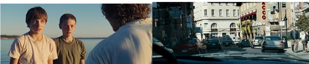
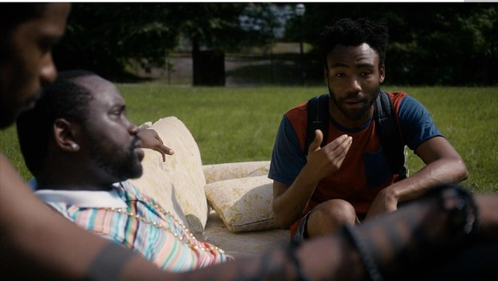
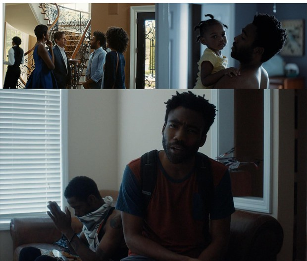
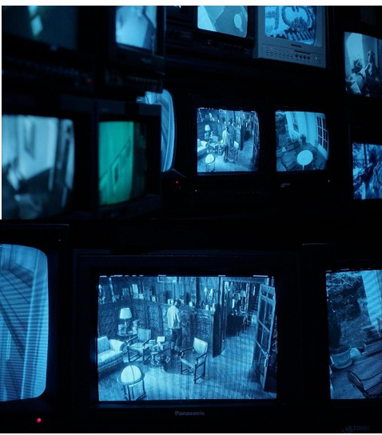
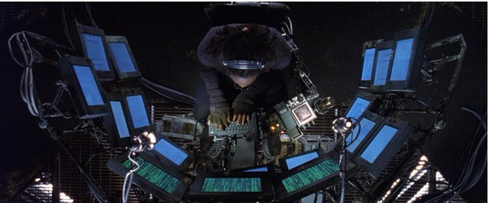
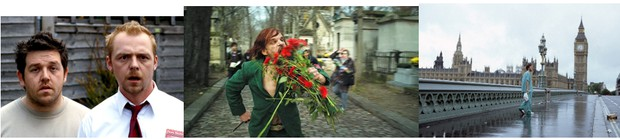
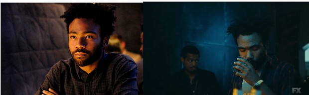
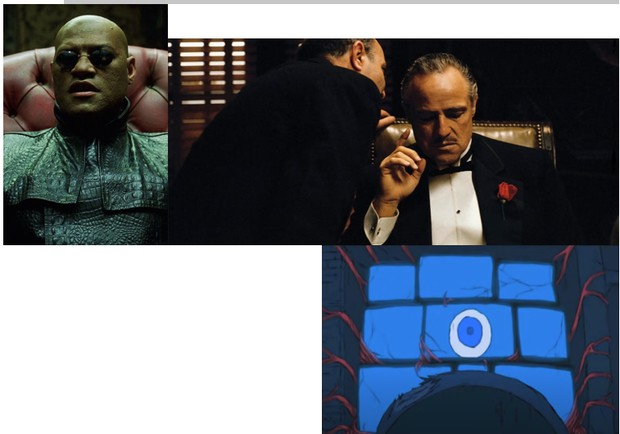

התאורה בסרט תהיה ריאליסטית כדי לתת את האשליה הויזואלית שזהו עולם אמיתי, למרות האבסורד שקיים בכל הסטיות הקטנות שמפרידות אותו מהמציאות. בסצנות החוץ מקור האור העיקרי יהיה השמש, והאור יהיה ישיר, קשה ומפוזר בכל הלוקיישן המצטלם, זאת כדי להגביר את תחושת הריאליזם של העולם. בעולם בו השמש זהה לשלנו ומאירה את העולם בצורה כמעט זהה.
 (תאורת שמש ישירה ריאליסטית, מתוך העיירה, 2010), (תאורת שמש ישירה ריאליסטית, מתוך בוץ, 2013)  (תאורת שמש ישירה ריאליסטית, מתוך אטלנטה, 2016)לעומת זאת בסצנות הפנים יעשה שימוש בתאורה שהיא מעט מהונדסת ומרוככת, כדי לתת את התחושה שאלו הם מקומות אחרים מהעולם שבחוץ, בעלי גישה רק למורשים אשר פועלים דרך הסוכנות החשאית.
 (תאורת פנים מהונדסת ומרוככת, מתוך אטלנטה, 2016)בחדרו החשוך של "הוא", יהיה כמו בתיאור, חשוך. סביבתו של "הוא" תהיה מוחשכת לחלוטין ומקור האור היחיד בסצנות האלה יהיה האור שמגיע מהמסכים בהם הוא מתבונן. מכיוון שקיימים הרבה מסכים מקור האור הוא גדול, ולכן יוצר תאורה רכה על "הוא". התאורה הרכה מעדנת פגמים בעור הפנים ותורמת לתחושת האלוהות של הדמות של "הוא". תאורת המוניטורים תהיה בעלת גוון כחול, גוון של מצלמות אבטחה ישנות, כתוצאה מכך גם התאורה תקבל את הגוון הכחול הזה.
 (מוניטורים של מצלמות אבטחה עם גוון כחול, מתוך אטלנטה, 2018)  (תאורת מסכים מרובים בחדר חשוך, מתוך המטריקס: רילודד, 2003)התסריט מחולק ל-3:
● רחוב עד גורד שחקים: תאורה רכה טבעית (ריאליסטית)
● דירה של ארי: Key רך (דיפיוז) ממקורות אור גדולים + רקעים וארט
● חדר מסכים: תאורה קשה: Top Light ו-fill כחול מהמסכים
ארי הוא בן אדם ככול בני האדם, ואנחנו רוצים לבנות עולם שעל פניו הוא ריאליסטי לחלוטין – על כן מקור התאורה העיקרי יהיה השמש ונשתמש בה כדי לייצר את התחושות המתבקשות בסצנות החוץ.
בדירה התאורה כן תהיה יותר מורגשת, פורמליסטית יותר. מקור Key גדול ו-Fill מינורי עם סטיית צבע. בלי בקים בכלל. (אולי פרט לאור שמש שיוגף מהחלונות או ממקור אור שיבוא מבחוץ)
בחדר במסכים מקור התאורה העיקרי יהיה קיר המסכים (Key רך, כחול) שיתן פרטים בפנים של הדמות. תאורת Low Key. אופציונלי לתת איזשהו Top Light כדי לייצר צלליות מתחת לעיניים, להזקין את האיש (פרטים/ קמטים בפנים) ולתת לו חזות יותר מאיימת.
